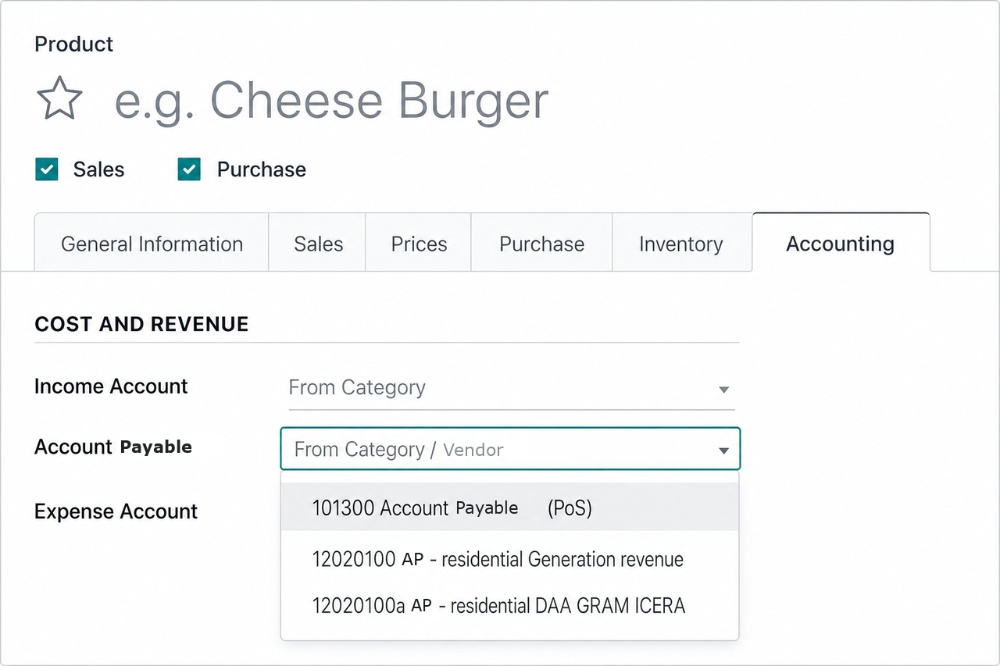

Product Account Payable – Split AP by Product
Set Account Payable on each product or category. Vendor bill journal items and
vendor payments then post to those product payable accounts automatically.

Overview
Odoo uses one vendor payable account by default. This module adds an
Account Payable field on products and categories. When you
confirm a vendor bill, the payable journal items are
created per product account payable — not only the partner’s default AP.
Ideal for businesses that track payables by product line, project type, cost
center, or purchase stream — for example when you need product payable accounts,
split AP by product, multiple payable accounts on one bill, AP by product
category, or vendor payment allocation by payable account.
Key Features
-
Product & category payable accounts
Configure Account Payable on the product Accounting tab (and on categories).
Resolution order: product → category → vendor → company default.
Fiscal positions are applied when mapping accounts.
-
Bill journal items per product AP
Vendor bill payable journal items use each product’s account payable.
Mixed products create separate payable / payment-term lines so the journal
entry and balance sheet reflect the correct AP accounts.
-
Payment allocation (FIFO)
Vendor payments allocate counterpart amounts across open product payable
residuals. Overpayments remain on the standard destination account.
-
Bill report clarity
Vendor bill PDF/HTML shows the payable account per product line and an
Account Payable Summary when more than one account is used.
-
Multi-company ready
Payable properties are company-dependent and respect the bill company context.
Who Is This For?
- Companies that need payable sub-ledgers by product or service type
- Organizations reporting AP separately for different business lines
- Accounting teams that currently fix payable postings with manual journal entries
How It Works
- Configure Account Payable on the product category and/or product.
- Create a vendor bill with those products.
- Confirm the bill — payable journal items use each product’s AP account.
- Register a vendor payment — payment counterparts follow open AP residuals.
- Review the bill report for line-level and summary payable information.
Technical Notes
- Depends on the standard Invoicing / Accounting app (
account)
- Compatible with Odoo 19
- Does not replace partner payable settings; extends them at product level
Support
Developed by bautistajnthn.
For questions, bugs, or customization requests, contact the author via the Apps Store
publisher profile.